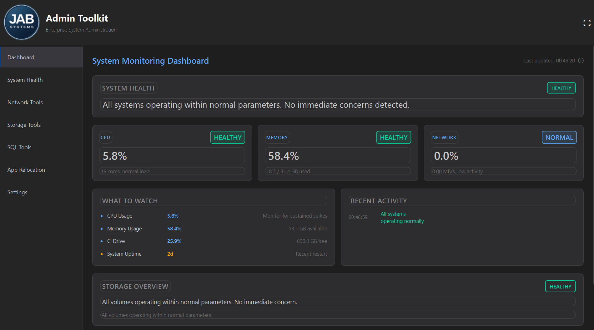

Enterprise System Tooling.
Built by Operators.
JAB Systems designs and delivers production-ready administration tools and automation for real-world environments.
🚧 Website in progress. Client work and product development are active.
Featured Product
JAB Admin Toolkit
A unified administrative toolkit covering system health, network diagnostics, storage hygiene, SQL operations, and application analysis.
Planned public launch: March 1, 2026

What We Do
- Custom internal tools for small and mid-sized businesses
- Operational automation to reduce manual work and risk
- System and data observability designed for production use